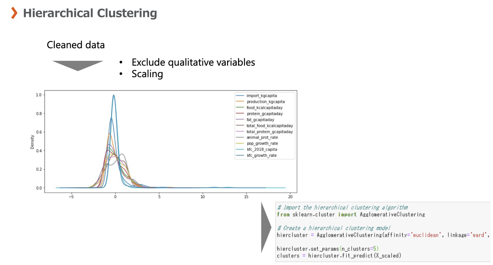
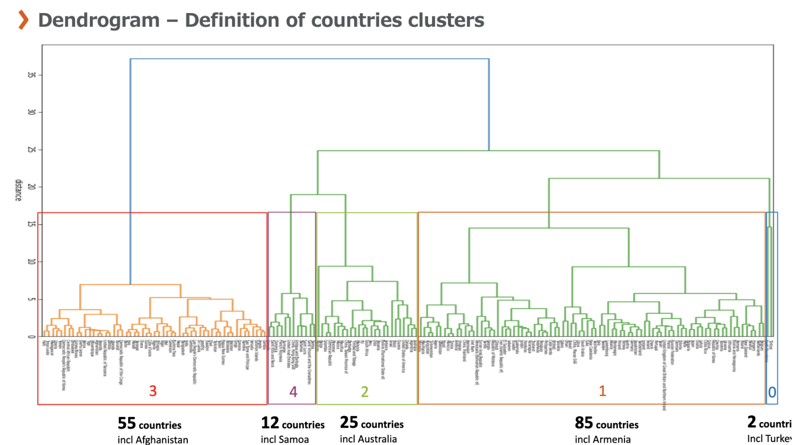
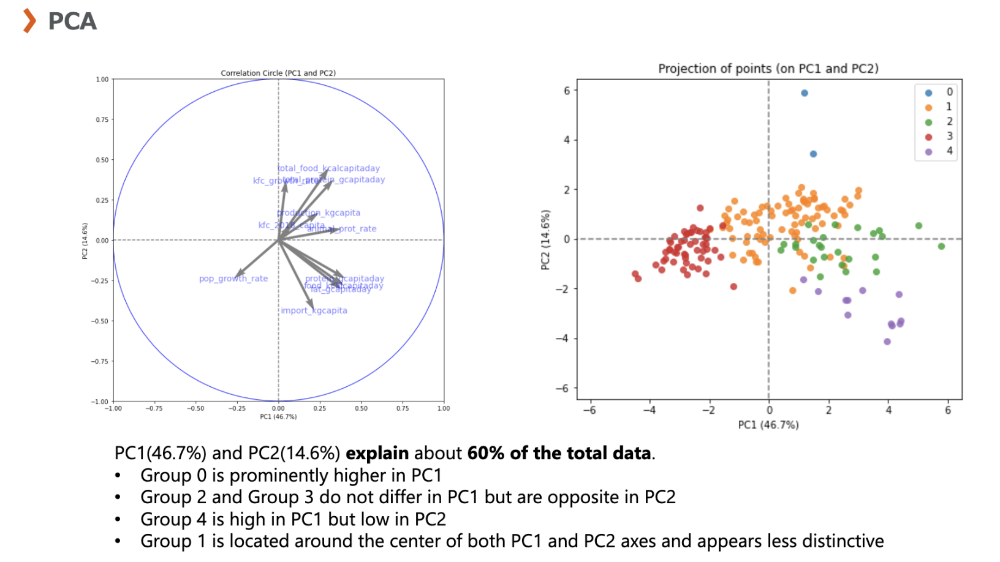
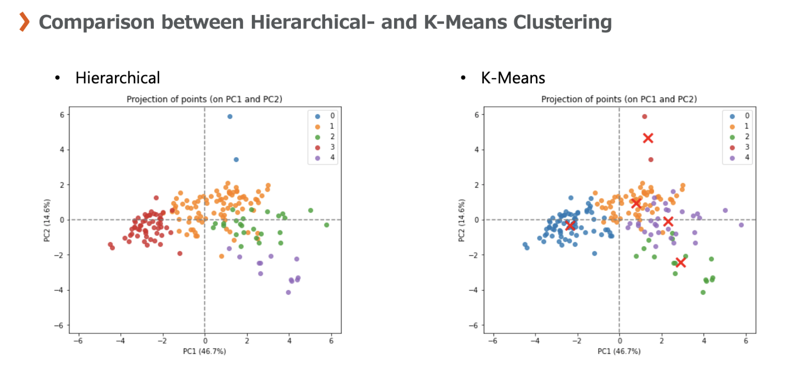
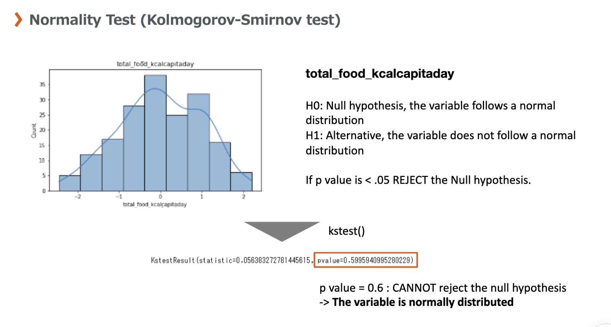

Agribusiness expansion
An agribusiness company specialized in chicken wants to expand internationally.
There was no targeted country or continent. The company's expansion strategy consists in exporting products rather than producing them locally in the targeted country.
The task was to help target specific countries as part of the company's growth strategy by using machine learning algorithm such as the K-Means and the hierarchical clustering. Part of the study involved analyzing country's diet, especially in terms of animal proteins and calories.
Data used:
A sample including all available countries, characterizing each of them by the following
variables:
- Difference in population between a previous year (elective) and the current year, expressed as a percentage.
- Proportion of animal proteins compared to the total amount of proteins available in the country.
- Food availability in protein per capita.
- Food availability in calories per capita.
Partial results:




